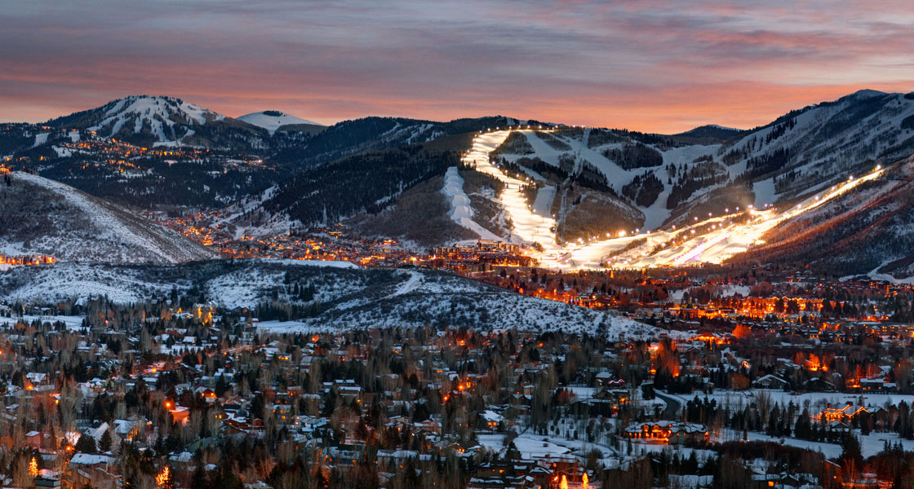
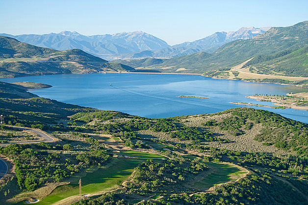
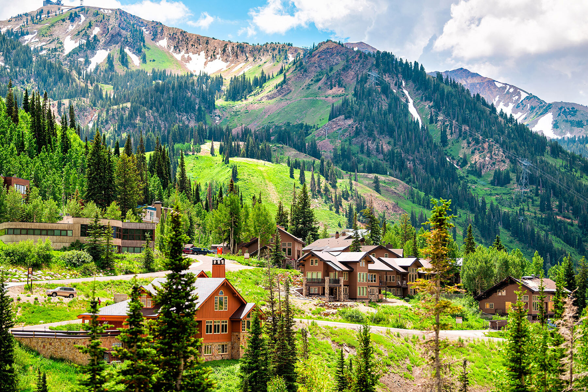

Park City is renowned for its world-class ski resorts, upscale dining, and vibrant arts scene. Hosting the famous Sundance Film Festival, it offers a range of high-end homes, from ski-in/ski-out properties to luxurious mountain estates.

Hideout
Median Sale Price: $1,618,084
Located near Jordanelle Reservoir and Park City, Hideout is a small luxury community known for its high-end homes with modern designs and breathtaking views of the Wasatch Mountains.

Alta
Typical Home Value: $1,495,473
Alta is a mountain town famous for its ski resort and alpine beauty. It has recently joined the ranks of Utah's "million-dollar cities," reflecting a growing trend of high-value real estate in scenic areas.

Granite
Typical Home Value: $1,228,008
Granite is a community in Salt Lake County known for its spacious homes and proximity to outdoor recreation, contributing to its high property values.
Alpine
Typical Home Value: $1,201,298
Alpine is an affluent community in Utah County, characterized by large homes and scenic views, making it one of the most expensive places to live in the state.